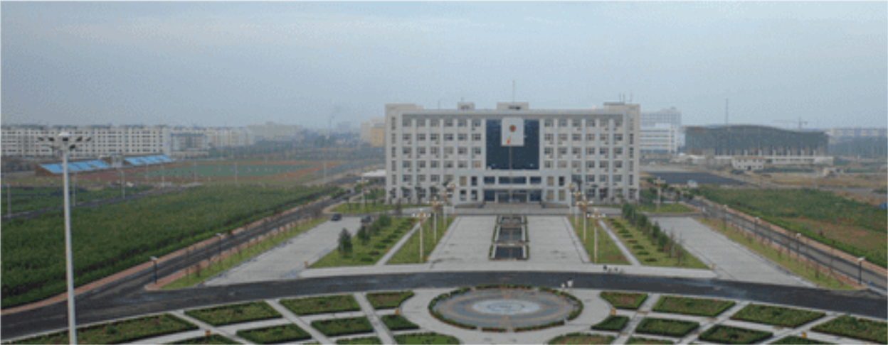
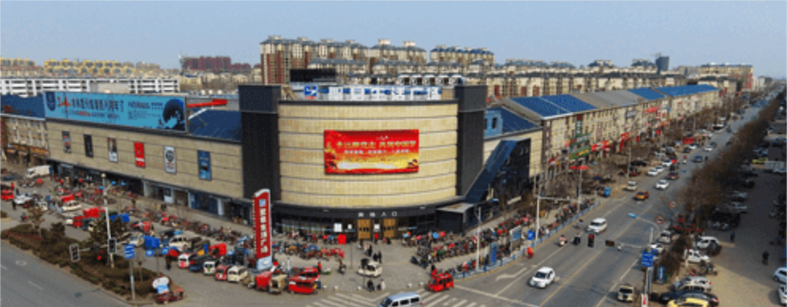
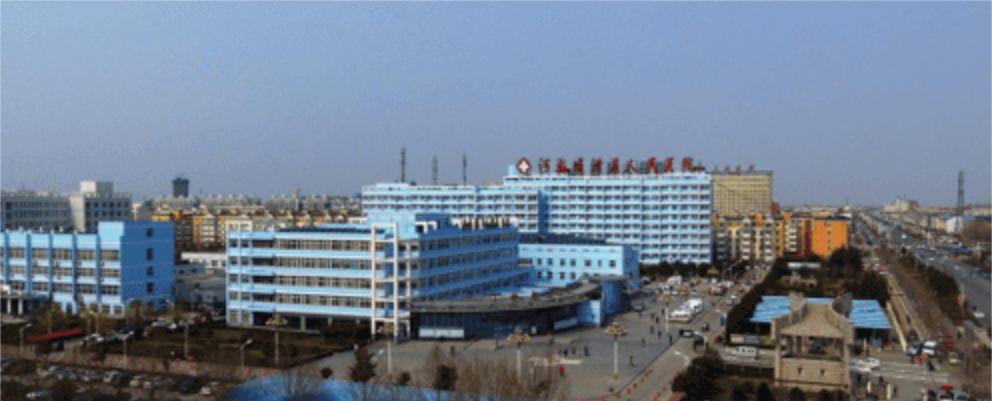

您现在的位置 | 首页 > | 大事记
1、2005年8月16日滑县新区管委会正式挂牌成立。（滑县产业集聚区管委会前身）
----滑县产业集聚区成立

2、2006年12月29日、30日滑县新区管委会陆续代管小铺靳庄、郭李庄、城关胡庄、九街等十个行政村。
----首次代管十个行政村

3、2008年12月被批准为河南省首批省级产业集聚区之一，位于县城东南部，是县城总体规划的组成部分。
----获批河南省首批产业集聚区

4、2009年4月7日投资8亿元的凤凰光伏科技有限公司多晶硅项目正式奠基，该项目为入驻产业集聚区的首个亿元项目。
----首个亿元项目落户
5、第一次规划《滑县产业集聚区发展规划》（2009-2020）园区面积为15平方公里（其中建成区面积5.5平方公里，发展区面积5平方公里，控制区面积4.5平方公里），主导产业食品加工和服装加工，于2010年4月12日通过河南省发展和改革委员会组织的审查。
----第一次园区规划修编
6、第二次规划《滑县产业集聚区发展规划》（2013-2020）园区面积由15平方公里调整为24.2平方公里，主导产业调整为食品加工和装备制造，于2012年12月18日通过河南省发展和改革委员会组织的审查。新规划园区北起新鑫路，南至长虹大道，东至东环路，西以大宫河为界，东西长约8km，南北宽约3.5km，规划面积24.2km2，目前建成区面积16.73平方公里，区内常住人口15万人。
----第二次园区规划修编
7、锦和新城奠基开始建设。
8、首个行政村迁入锦和新城
9、产业集聚区年工业生产总值突破？？？亿元。
10、落户机械加工、装备制造、食品加工、纺织服装等各类企业超过200家。